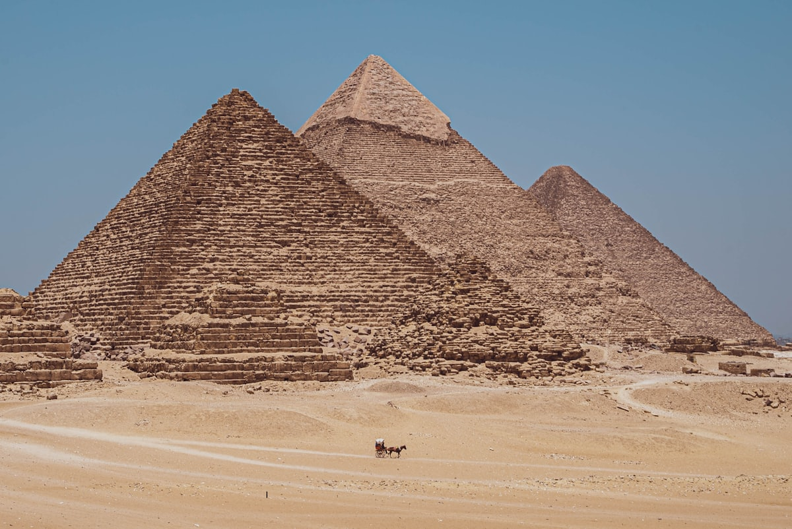
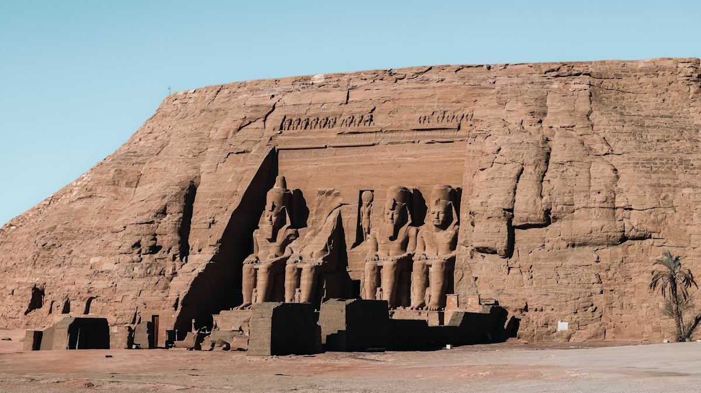
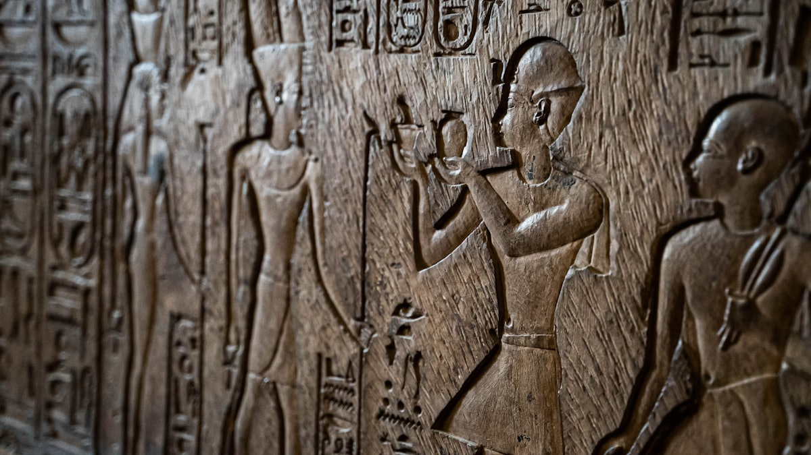
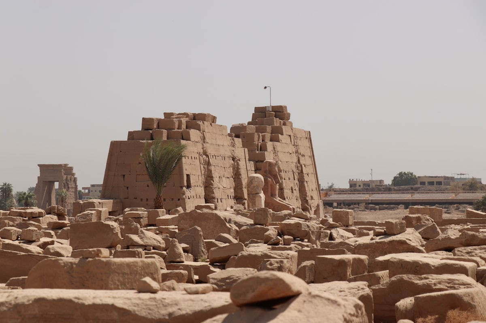
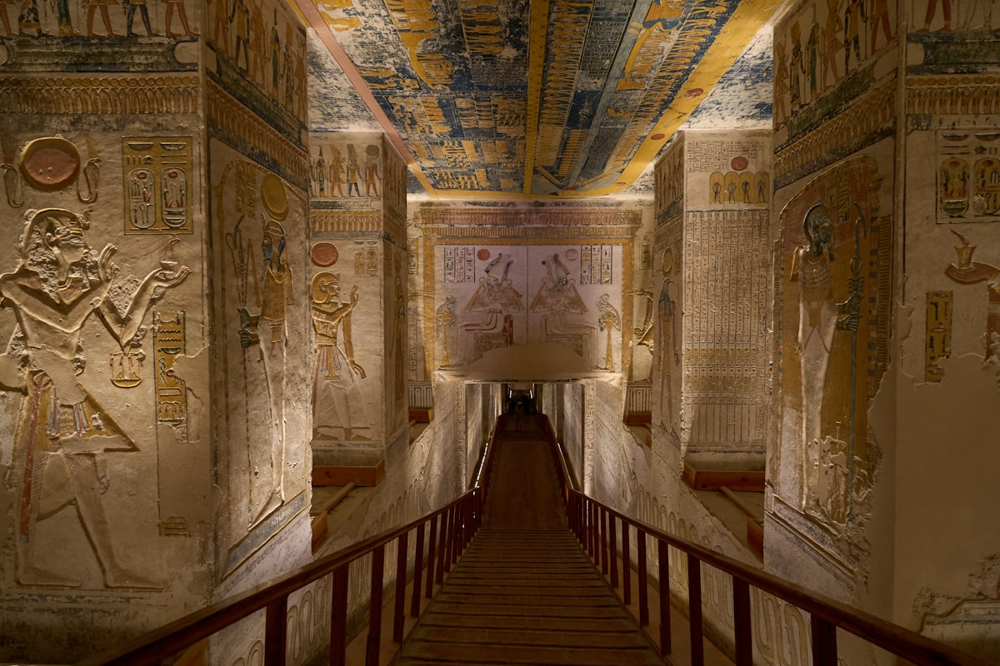
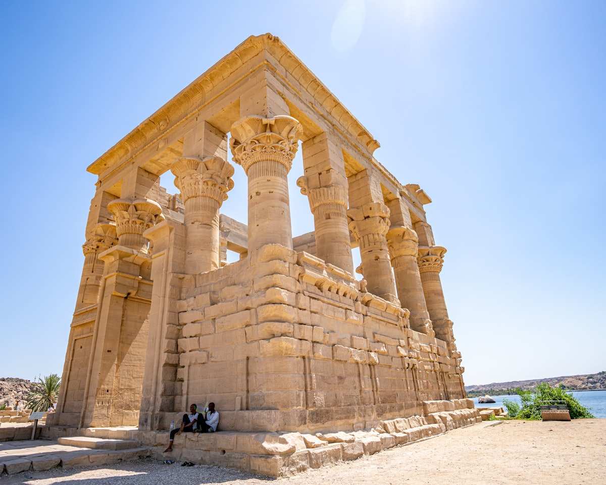
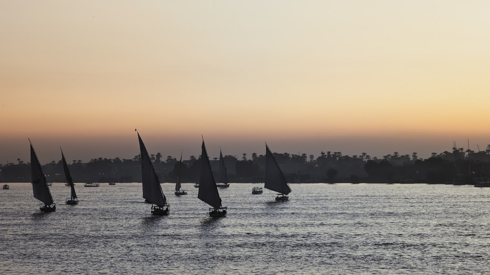
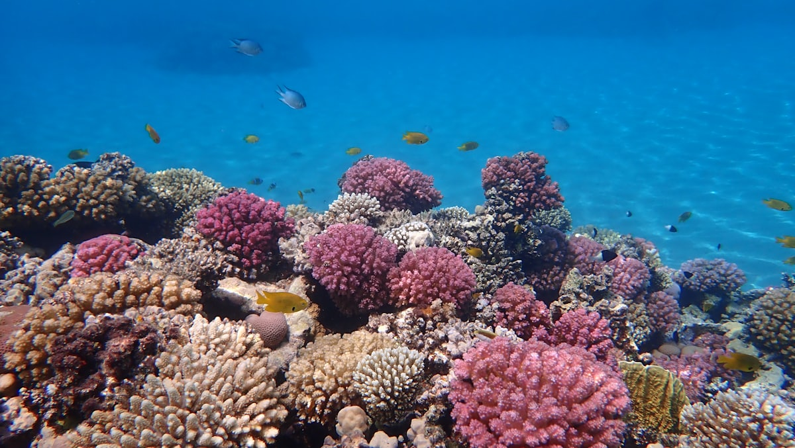

| 事项 | 结论 |
|---|---|
| 事项 | 结论 |
| 签证 | 落地签（约 25 美元，需自备美元现金）+ 电子签可选；中国护照可申请，出发前确认政策 |
| 推荐方案 | 开罗 4 天 → 飞阿斯旺 3 天 → 尼罗河邮轮 3 天 2 晚 → 卢克索 2 天 → 红海 2 天 → 返开罗 |
| 返程约束 | 第 15 天从开罗✈北京直飞（埃及航空），航班不多，提前 1–2 个月订 |
| 行程链 | 开罗 → 阿斯旺 → 尼罗河邮轮 → 卢克索 → 红海 → 返程 |
| 预算（人均） | 经济 15000–20000 ／ 标准 25000–32000 ／ 舒适 45000–60000（人民币） |
| 三件提前事 | ① 办落地签/电子签 ② 订尼罗河邮轮与阿布辛贝小团 ③ 订开罗—阿斯旺内陆航班 |
| 季节提醒 | 11 月–3 月最舒适（白天 20–25℃）；4–10 月酷热，暑期尽量上午活动下午躲室内/酒店泳池 |
| 支付 | 埃及镑（EGP）+ 美元现金；1 埃及镑 ≈ 0.13 元，小额消费现金，大额（酒店/邮轮）可刷卡 |
以下为 15 天 14 晚的推荐节奏：从开罗一路向南到阿斯旺，再乘尼罗河邮轮顺流回卢克索，最后转到红海度假收尾。每日主景点 ≤2 个，上午 8 点前、下午 16 点后是神庙最佳窗口。
| 日期 | 行程 | 过夜地 | 主题 |
|---|---|---|---|
| D1 抵开罗 | 北京✈开罗（约 11h），入住酒店，晚上尼罗河边散步看夜景 | 开罗 | 抵达+预热 |
| D2 | 吉萨金字塔群 + 狮身人面像（下午金色光线最佳），可骑骆驼 | 开罗 | 金字塔日 |
| D3 | 埃及博物馆（图坦卡蒙黄金面具）→ 萨拉丁城堡 + 穆罕默德·阿里清真寺 | 开罗 | 博物馆与城堡 |
| D4 | 伊斯兰开罗：汗哈利利市场 + 爱资哈尔清真寺 + 穆伊兹街，购物 | 开罗 | 市集日 |
| D5 | 开罗✈阿斯旺：阿斯旺大坝 + 未完成的方尖碑，傍晚尼罗河三桅帆船日落 | 阿斯旺 | 飞南部 |
| D6 | 阿布辛贝神庙（凌晨 4 点出发，车程约 3.5h）往返 | 阿斯旺 | 阿布辛贝日 |
| D7 | 菲莱神庙（乘船登岛）+ 努比亚村，晚上尼罗河夜景 | 阿斯旺 | 神庙与村落 |
| D8 | 尼罗河邮轮起航：康翁波神庙（鳄鱼神庙） | 邮轮 | 邮轮第一天 |
| D9 | 埃德夫神庙（荷鲁斯神庙，马车前往），邮轮继续北上 | 邮轮 | 邮轮第二天 |
| D10 | 抵达卢克索：西岸帝王谷 + 哈特谢普苏特女王神庙 + 门农巨像 | 卢克索 | 西岸帝王谷 |
| D11 | 东岸：卡纳克神庙 + 卢克索神庙（晚上看灯光） | 卢克索 | 东岸神庙日 |
| D12 | 卢克索热气球日出 → 驱车前往红海赫尔格达（约 4h），入住度假酒店 | 红海赫尔格达 | 转场红海 |
| D13 | 红海浮潜/潜水（Orange Bay/吉夫顿岛），玻璃底船或水肺可选 | 红海赫尔格达 | 潜水日 |
| D14 | 沙漠冲沙：贝都因村落 + 沙丘越野 + 日落晚餐，或酒店 SPA 放松 | 红海赫尔格达 | 沙漠日 |
| D15 返程 | 赫尔格达✈开罗（约 1h）或巴士返开罗，开罗✈北京，到家休息 | — | 收尾 |
以下为 15 天全程的逐小时执行时间线，可当作「当天打开照着走」的清单。标注 ※ 的可选项视体力与天气取舍。
| 时间 | 事项 |
|---|---|
| 13:00–17:00 | 北京✈开罗（埃及航空直飞约 11h）。机场换汇/办落地签（约 25 美元），打车到市中心（Uber 约 30–45 分钟） |
| 17:30–19:00 | 入住酒店（推荐尼罗河畔的 Zamalek/解放广场附近），休息补充体力 |
| 19:30–21:00 | 尼罗河边散步，看两岸灯光夜景，河边咖啡厅坐坐 |
| 21:00 | 晚餐：埃及烤鸽/烤肉拼盘，回酒店早睡倒时差 |
| 时间 | 事项 |
|---|---|
| 07:30 | 从开罗市中心出发（Uber 或包车，车程约 40min），赶在旅行团前到 |
| 08:30–12:00 | 吉萨金字塔群（门票约 540 埃及镑）：胡夫、卡夫拉、孟卡拉三座，可选进入胡夫金字塔内部（另购票，约 600 埃及镑） |
| 12:00–13:00 | 午餐：景区附近或回酒店附近烤鸡/库莎丽（Koshary） |
| 15:00–17:00 | 狮身人面像（含门票）：下午光线从西侧打来最好拍，可付费骑骆驼拍照（先谈好价格） |
| 17:30–19:00 | 吉萨金字塔声光秀（可选，约 20–40 美元）或返回开罗，晚餐：尼罗河船餐厅夜景 |
| 时间 | 事项 |
|---|---|
| 08:30–12:30 | 埃及博物馆（解放广场老馆）（门票约 600 埃及镑）：图坦卡蒙黄金面具与黄金棺、王室木乃伊展厅（另购票） |
| 12:30–13:30 | 午餐：解放广场附近库莎丽/烤鸡 |
| 14:30–17:00 | 萨拉丁城堡 + 穆罕默德·阿里清真寺（联票约 300 埃及镑）：奥斯曼风格清真寺，高处俯瞰开罗全景 |
| 17:30–19:00 | 科普特区（免费）：悬空教堂与罗马塔，步行回酒店 |
| 19:30 | 晚餐：埃及菜（烤肉串/烤鱼/塔梅亚炸豆饼） |
| 时间 | 事项 |
|---|---|
| 08:30–10:00 | 穆伊兹街（免费）：中世纪伊斯兰建筑群，老城门与清真寺密集 |
| 10:00–11:30 | 爱资哈尔清真寺（免费，需着装得体）：千年学术中心，庭院安静 |
| 11:30–13:00 | 汗哈利利市场（免费）：香料、灯具、纸莎草画、香水与纪念品，还价到 1/3–1/2 开价 |
| 13:00–14:00 | 午餐：市场边老字号库莎丽/烤肉 |
| 14:30–17:00 | 继续逛市场 + 抽水烟咖啡馆体验（可选），买伴手礼 |
| 18:00 | 晚餐：尼罗河畔餐厅，准备次日南下 |
| 时间 | 事项 |
|---|---|
| 08:00 | 开罗机场国内航站楼✈阿斯旺（约 1.5h，提前 1 个月订，约 80–150 美元） |
| 10:30–12:30 | 阿斯旺大坝（约 100 埃及镑）：尼罗河上世界最大水坝之一，看纳赛尔湖 |
| 12:30–13:30 | 午餐：阿斯旺烤鱼（尼罗河鲈鱼） |
| 14:00–16:00 | 未完成的方尖碑（约 150 埃及镑）：古埃及最大的方尖碑遗址，花岗岩采石场 |
| 16:30–18:30 | 尼罗河三桅帆船（Felucca）（约 1.5h，谈好价格约 300–500 埃及镑/船）：顺流看河景日落，河畔努比亚村落 |
| 19:00 | 晚餐：河畔餐厅，夜宿阿斯旺 |
| 时间 | 事项 |
|---|---|
| 04:00–04:30 | 酒店大堂集合，旅游团车队凌晨出发（全程警车护送，约 3.5h 车程） |
| 08:00–11:00 | 阿布辛贝神庙（门票约 400–600 埃及镑）：拉美西斯二世四座巨像，岩壁上的王后神庙（奈费尔塔利），参观约 2h |
| 11:00–14:30 | 返程回阿斯旺（同样约 3.5h），车上补觉 |
| 15:00–16:30 | 午餐后回酒店休息，泳池或河畔咖啡馆放松 |
| 18:00 | 晚餐：阿斯旺烤鱼，尽早休息 |
| 时间 | 事项 |
|---|---|
| 08:00 | 前往菲莱神庙码头，乘船登岛 |
| 08:30–11:00 | 菲莱神庙（门票约 450 埃及镑 + 船费）：献给伊西斯女神的水上神庙，搬迁后的阿吉勒基亚岛，柱廊与浮雕 |
| 11:00–12:30 | 努比亚村（约 200–300 埃及镑含船）：彩色房屋与努比亚文化，可买手绘布画 |
| 12:30–13:30 | 午餐：阿斯旺河边努比亚风味午餐 |
| 14:30–17:00 | 自由时间：逛阿斯旺集市 / 河畔咖啡馆看帆船，或加项「沙漠植物园」 |
| 18:30 | 晚餐后准备次日邮轮登船 |
| 时间 | 事项 |
|---|---|
| 08:00–10:00 | 办理尼罗河邮轮登船手续（4 天 3 晚 / 3 天 2 晚可选，含全餐），整理行李入住船舱 |
| 10:30–12:30 | 邮轮航行，甲板晒太阳看两岸棕榈与村庄 |
| 13:00–14:00 | 邮轮午餐（自助） |
| 14:30–17:00 | 康翁波神庙（约 300 埃及镑）：罕见的双神神庙（鳄鱼神索贝克+鹰神荷鲁斯），旁边的鳄鱼木乃伊博物馆 |
| 18:00 | 邮轮晚餐 + 船上尼罗河夜航，晚间可看星星 |
| 时间 | 事项 |
|---|---|
| 07:30 | 邮轮停靠埃德夫，乘马车前往神庙（车程约 10min，讲好往返价） |
| 08:30–11:00 | 埃德夫神庙（约 300–400 埃及镑）：保存最完整的古埃及神庙之一，献给鹰神荷鲁斯，巨大塔门浮雕 |
| 11:30–13:00 | 返邮轮，甲板放松/看书 |
| 13:00–14:00 | 邮轮午餐，继续北上航行 |
| 15:00–17:00 | 河景自由活动：看两岸甘蔗田与水鸟，拍照 |
| 19:00 | 邮轮晚餐 + 船员表演（肚皮舞/旋转舞，视邮轮安排） |
| 时间 | 事项 |
|---|---|
| 08:00 | 邮轮靠泊卢克索，行李寄存，乘渡轮到西岸 |
| 08:30–12:00 | 帝王谷（门票约 600 埃及镑，含 3 座墓）：图坦卡蒙墓（另购票约 500 埃及镑）、KV62，选择拉美西斯五/六世墓看完整壁画 |
| 12:00–13:30 | 哈特谢普苏特女王神庙（约 250 埃及镑）：三层阶梯式神庙嵌入悬崖，光线上午最佳 |
| 13:30–14:30 | 午餐：西岸路边餐馆或回卢克索东岸 |
| 15:00–16:30 | 门农巨像（免费）：两座 20m 高石像，打卡后回东岸酒店入住 |
| 18:00 | 晚餐：卢克索尼罗河畔餐厅 |
| 时间 | 事项 |
|---|---|
| 07:30 | 卢克索东岸出发（可步行或马车），先到卡纳克 |
| 08:30–12:00 | 卡纳克神庙（约 450–600 埃及镑）：134 根巨型石柱大厅、方尖碑、圣湖，埃及最大神庙群 |
| 12:00–13:00 | 午餐：卢克索老城区库莎丽/烤肉 |
| 14:00–16:30 | 卢克索神庙（约 400–500 埃及镑）：日落与夜晚灯光下最美，阿蒙神庙轴线，夜晚灯光演出（另购票） |
| 17:30–19:00 | 漫步卢克索滨河大道，逛当地市场买伴手礼 |
| 19:30 | 晚餐：河畔餐厅，卢克索最后一晚 |
| 时间 | 事项 |
|---|---|
| 04:30 | 凌晨前往热气球起飞点（天气好才飞，务必提前 1 天确认） |
| 05:00–07:00 | 卢克索热气球（约 1500–2500 埃及镑/人）：日出时分飞越帝王谷与尼罗河西岸，俯瞰神庙与田野 |
| 07:30–09:30 | 返回酒店早餐、退房 |
| 09:30–13:30 | 包车/拼车前往红海赫尔格达（车程约 4h，公路沿红海海岸线） |
| 14:00 | 入住赫尔格达海滨度假酒店（全包式），下午酒店泳池/私家海滩放松 |
| 18:30 | 晚餐：酒店自助（全包式含），海边日落散步 |
| 时间 | 事项 |
|---|---|
| 08:00 | 酒店集合，参加红海浮潜/潜水一日游（约 40–80 美元/人含午餐） |
| 08:30–13:00 | Orange Bay / 吉夫顿岛：快艇出海，2–3 个浮潜点看珊瑚与热带鱼（蓝海星、小丑鱼） |
| 13:00–14:00 | 船上/岛上自助午餐，沙滩自由活动 |
| 14:30–17:00 | 玻璃底船观光或水肺潜水体验（PADI 入门课程约 80–120 美元，需半天） |
| 18:30 | 晚餐：酒店海鲜自助，红海落日 |
| 时间 | 事项 |
|---|---|
| 08:30–12:00 | 上午自由：酒店 SPA / 泳池 / 海滨发呆，或补一次浮潜 |
| 12:00–13:00 | 午餐：酒店自助 |
| 13:30–18:00 | 沙漠冲沙半日游（约 25–40 美元/人）：四驱车沙丘越野 → 贝都因村落参观 → 骑骆驼 → 沙漠日落 + 篝火晚餐 |
| 18:00–20:00 | 沙漠营地晚餐（烤饼+烤肉+埃及茶），观星回程 |
| 20:30 | 返酒店，收拾行李准备返程 |
| 时间 | 事项 |
|---|---|
| 08:00–10:00 | 退房，前往赫尔格达机场（或乘大巴返开罗约 5–6h） |
| 10:30–12:00 | 赫尔格达✈开罗（约 1h）或大巴；到开罗后前往国际航站楼 |
| 13:00–15:00 | 办理值机，机场退税（购物满额可退增值税约 10–14%，保留税票） |
| 16:00–17:30 | 开罗✈北京（直飞约 11h，埃及航空） |
| 次日 08:30 | 抵北京，入境回家 |
必去（必去）/ 顺路（顺路）/ 可跳过（可跳过）。

必去
必去
必去
必去
必去
必去
顺路图片为 Unsplash 主题图（吉萨金字塔、阿布辛贝、埃及博物馆、卡纳克神庙、帝王谷、菲莱神庙、尼罗河帆船、红海珊瑚均为埃及实景），用于页面配图。更多免费景点：萨拉丁城堡外观、门农巨像、尼罗河滨河大道、汗哈利利市场。
点击左侧节点可在地图上定位；点击地图 marker 会高亮对应节点。坐标为 WGS-84 转 GCJ-02 纠偏后标注。
以下为单人、不含购物的估算，人民币计价；出发地基准北京。汇率按 1 埃及镑 ≈ 0.13 元、1 美元 ≈ 7.1 元估算。往返机票按直飞淡季 5000–6500 元计。当地小额消费用埃及镑现金，酒店/邮轮/一日游多用美元。
| 项目 | 经济（15000–20000） | 标准（25000–32000） | 舒适（45000–60000） |
|---|---|---|---|
| 往返机票 | 北京⇄开罗 5000–6000 | 含内陆段（开罗—阿斯旺等）6500–8000 | 直飞商务/灵活 15000–25000 |
| 住宿（14 晚） | 民宿/经济酒店 200–350/晚 | 四星/尼罗河景观 400–700/晚 | 五星全包度假村 1000–2000/晚 |
| 交通 | 火车/包车+拼车 2000–3000 | 内陆航班+邮轮 4500–6000 | 全程包车/包机阿布辛贝 10000–15000 |
| 门票 | 核心神庙约 2000–3000 | 含热气球/骑骆驼约 4000–6000 | 全含+私导+声光秀约 8000–12000 |
| 餐饮（15 天） | 路边摊+库莎丽 2500–3500 | 正常下馆子 4000–5500 | 尼罗河船餐厅+高级餐 10000–15000 |
带娃推荐：金字塔骑骆驼（10 分钟短途）与埃及博物馆必去；阿布辛贝改乘包机或放弃（凌晨 3.5h 车程小孩受不了）；红海浮潜选岸边浅水区并穿救生衣；热气球身高与风力受限，8 岁以下一般不推荐。埃及小孩本身随家长免票/半价政策各不相同，买票时先问。
冬季（11–3 月）：最佳时段，白天 20–25℃ 适合全户外行程，红海仍可下水，酒店价格中等；夏季（5–9 月）：白天 40℃+，把金字塔与神庙全部放清晨 8 点前，午后安排博物馆/酒店泳池，红海改室内潜水中心与傍晚浮潜。
| 方式 | 时长 | 参考价 | 备注 |
|---|---|---|---|
| 直飞（推荐） | 北京→开罗约 11–12h | 往返 5000–6500 元 | 埃及航空每周多班，开罗国际机场 |
| 转机 | 14–22h | 4200–5800 元 | 经迪拜/阿布扎比/多哈/伊斯坦布尔，便宜但费时 |
| 国际铁路/陆路 | — | — | 中国到埃及无直达铁路/公路，只能飞机 |
| 区域 | 价格/晚 | 优点 | 短板 |
|---|---|---|---|
| 开罗·解放广场/Zamalek | 经济 200–350 / 标准 400–700 | 近埃及博物馆与尼罗河，打车方便 | 老城街道晚间接头较多 |
| 开罗·吉萨金字塔景观 | 标准 500–900 | 窗外就是金字塔，日出日落机位 | 离市中心远，餐厅选择少 |
| 阿斯旺·尼罗河岸 | 经济 200–350 / 标准 400–650 | 帆船码头近，河景与日落 | 夏季高温，部分酒店旧 |
| 卢克索·东岸 | 经济 200–300 / 标准 350–600 | 卡纳克/卢克索神庙步行可达 | 西岸帝王谷需渡河 |
| 红海·赫尔格达滨海 | 标准 500–800 / 全包 800–1500 | 全包式度假村，海滩+泳池+餐饮 | 离市区远，进出需打车 |
| 尼罗河邮轮 | 3 晚约 2000–4000/人 | 住着走，含全餐与沿岸神庙 | 船舱空间有限，岸上购物贵 |